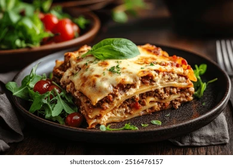

Home
Lasagna

A delicious cheesy delicacy that's the favorite food of a certain cat
Ingredients
For the meat sauce
- 1 tbsp olive oil
- 1 lb ground beef
- 1 medium onion, diced
- 2 cloves garlic, minced
- 1 (28 oz) can crushed tomatoes
- 2 (6 oz) cans tomato paste
- 1 (14.5 oz) can tomato sauce
- ½ cup water
- 2 tbsp sugar (optional, to reduce acidity)
- 1 tsp Italian seasoning
- 1 ½ tsp dried basil
- Salt and black pepper to taste
For the cheese filling
- 1 (15 oz) container ricotta cheese
- 1 large egg, lightly beaten
- ½ cup grated Parmesan cheese
- 2 tbsp fresh parsley, chopped
- ½ tsp salt
For the assembly
- 12 lasagna noodles
- 1 lb shredded mozzarella cheese
Instructions
1. Cook the meat sauce
- In a large pot or Dutch oven, heat the olive oil over medium-high heat. Add the ground beef and diced onion. Cook until the meat is browned and the onion is softened, about 6–8 minutes.
- Add the minced garlic and cook for another minute until fragrant.
- Stir in the crushed tomatoes, tomato sauce, tomato paste, and water. Add the sugar (if using), Italian seasoning, basil, salt, and pepper.
- Bring the sauce to a simmer, then reduce the heat to low, cover, and let it cook for at least 30 minutes, or up to 1½ hours for a richer flavor. Stir occasionally to prevent sticking.
2. Prepare the Noodles and Cheese Filling
- Bring water to a boil and cook the noodles: While the sauce simmers, bring a large pot of lightly salted water to a boil. Cook the lasagna noodles according to package directions until al dente.
- Drain and rinse: Drain the noodles and rinse with cold water to prevent them from sticking together.
- Mix the filling: In a separate bowl, mix together the ricotta cheese, egg, Parmesan cheese, chopped parsley, and salt for the cheese filling.
3. Assemble the Lasagna
- Preheat the oven: Preheat your oven to 375°F (190°C).
- First sauce layer: Spread about 1½ cups of the meat sauce over the bottom of a 9x13-inch baking dish.
- First noodle layer: Arrange a single layer of about four lasagna noodles over the sauce.
- First ricotta layer: Spread half of the ricotta cheese mixture evenly over the noodles.
- First mozzarella and sauce layer: Sprinkle a layer of mozzarella cheese over the ricotta. Spoon another 1½ cups of meat sauce over the mozzarella.
- Repeat the layers: Repeat the layers: noodles, remaining ricotta, more mozzarella, and more meat sauce.
- Final topping: Top with a final layer of noodles, the remaining meat sauce, and the rest of the mozzarella cheese.
4. Bake and Rest
- Cover and bake: Cover the baking dish tightly with aluminum foil. To prevent the cheese from sticking, you can either spray the foil with cooking spray or tent the foil so it doesn't touch the cheese. Bake for 25 minutes.
- Uncover and finish baking: Remove the foil and continue to bake for another 25 minutes, or until the cheese is melted and bubbling.
- Rest: Let the lasagna rest for at least 15 minutes before serving. This allows the layers to set, making it easier to cut and serve.